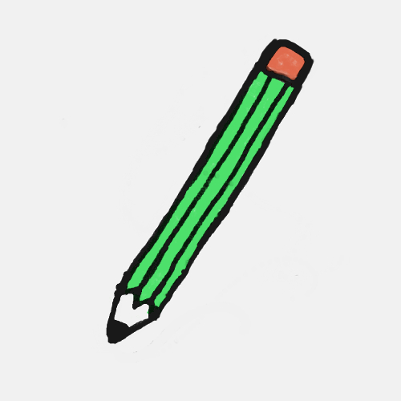
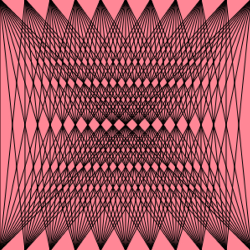

Pizarra

Esta fue la primera idea de proyecto. Consiste en un programa de dibujo donde se pueden cambiar lo colores
y grosores de las lineas. Se puede jugar con las teclas 0, 1, 2, 3, n, e, b, y, r, o, p, g y la barra espaceadora
para hacer los dibujos.
Ciclo For

Este fue un primer acercamiento a lo que es el ciclo for. Al crear este proyecto el objetivo fue ver que ocurría
al crear objetos y modificarlos, mientras que al mismo tiempor se iban cambiando los numeros del ciclo.
Al final se llegó a una especie de trama de lineas las cuales van unidas entre sí.